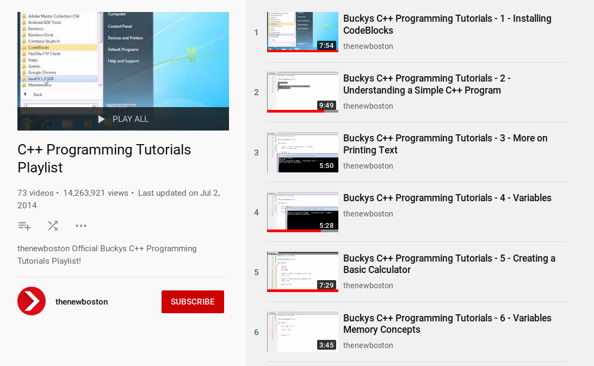
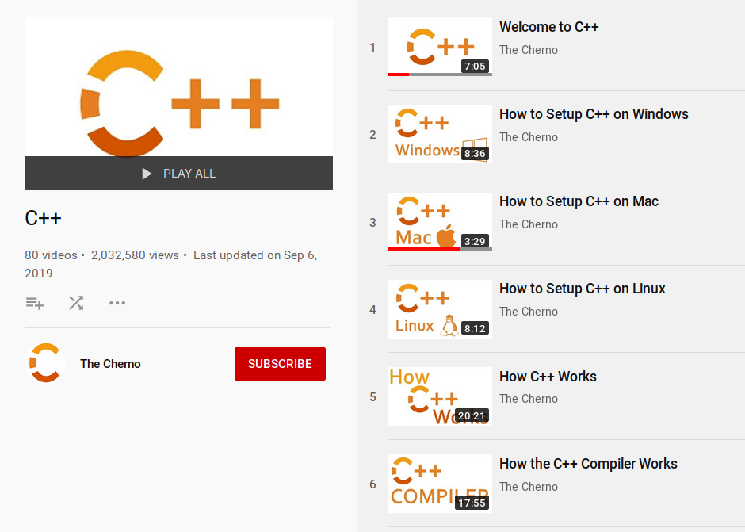
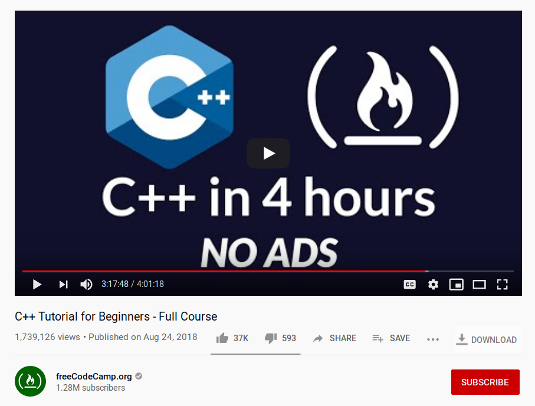
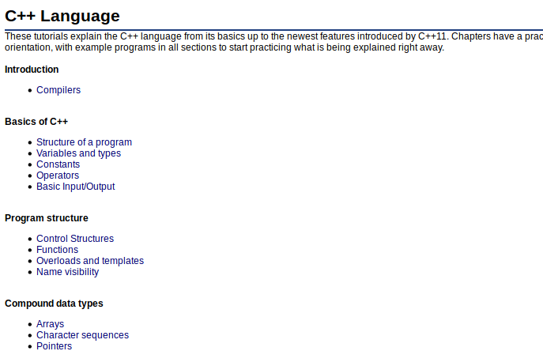
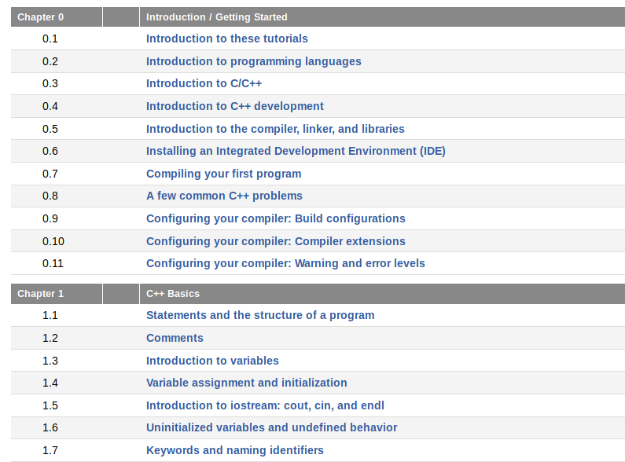
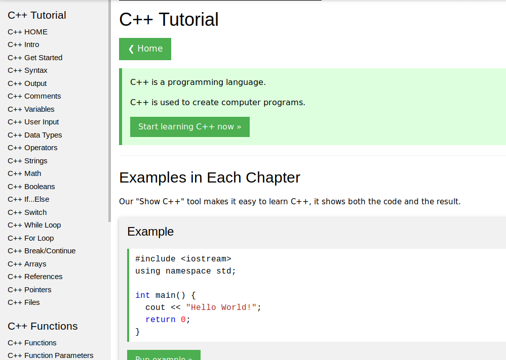

C++ as a first programming language
C++ spans the continuum of high to low level computer language. It makes use of classes and inheritance, high-level object-oriented concepts, but it also allows you to flip bits and modify individual memory locations. If you plan to do much work with robots or embedded micro controllers, you will likely be using C++.
I sent out a call for help over the Internet, and the citizens of Twitter and LinkedIn responded generously. Check out these threads and you’ll find a lot of recommendations. Here are the most popular.
The video tutorials give a guided tour. They are a perfect way to let someone else set the pace and lead you through a new and unfamiliar environment.
The written tutorials give a more self paced experience. They are especially good for reference and review. It’s easy to access topics out of order as needed.
When you go to the new town, do you enjoy having a tour guide? Someone who brings their own personality and insights and points out the highlights? Then you might want to start with a video tutorial. Or do you prefer to walk through a new city with a map, stopping into shops and pubs that catch your eye? Then you might want to start with a written tutorial.
Whatever your inclination, shop around. Each of these have their own personality and pace. For the richest experience, follow two or three of them. Having three independent explanations of the same topic gives it a depth that’s hard to get any other way
Video
Bucky's C++ Programming Tutorials
Great for the beginner. It's from 2011, but the basics of the language haven't changed since then. Bucky writes code live, talking through every line and choice.
The Cherno YouTube channel
This one is a little faster moving. Especially good fit if you've one a little bit of coding before. There's more emphasis on how things work behind the scenes and and why.
FreeCodeCamp
This has a quick pace, but is meticulously structured and very accessibly presented.
Written
A slightly more reference feel. You're in control of the pacing and even the order.
cplusplus.com
This is a good intro. Walks line by line through code.Concise. Lots of opportunities to modify examples and run them for yourself.
learncpp.com
Great explanations with lots of examples. No code-it-yourself windows.
w3schools
Short description of each concept, but lets you practice writing a simple example right away, right in the browser. A classic resource